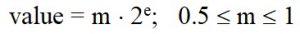

Модуль math. Теоретико-числовые функции и функции представления
Поиск на других ресурсах:
|
|
1. Подключение модуля math. Функция math.ceil(). Округление в большую сторону
Чтобы использовать теоретико-числовые функции и функции представления из модуля math, нужно этот модуль предварительно подключить
import math
Функция math.ceil(x) возвращает такое вещественное число y, которое удовлетворяет следующим условиям:
В качестве аргумента x может задаваться только целое или вещественное число. Если попробовать задать комплексное число в качестве аргумента x, то интерпретатор сообщит об ошибке.
Пример.
import math
# для вещественного аргумента, положительные числа
x = 2.65
y = math.ceil(x) # y = 3.0
x = 3.0 # y = 3.0
y = math.ceil(x)
x = 2.000001
y = math.ceil(x) # y = 3.0
# вещественный аргумент, отрицательные числа
x = -2.0001 # y = -2.0
y = math.ceil(x)
# целочисленный аргумент
x = 13
y = math.ceil(x) # y = 13.0
2. Функция math.copysign(x,y). Присваивание аргумента с учетом знака числа
Функция math.copysign(x,y) возвращает результат вещественного типа, который равен значению аргумента x но со знаком аргумента y. Аргументы x, y могут быть только целого или вещественного типа.
Пример.
import math
# функция math.copysign(x,y)
x = 3.64
y = -5.44
z = math.copysign(x, y) # z = -3.64 => значение x, знак y
x = -2.85
y = 0.00001
z = math.copysign(x, y) # z = 2.85
# случай, когда y = -0.0
x = 2.85
y = -0.0 # вещественное отрицательное число
z = math.copysign(x, y) # z = -2.85
# случай, когда y = 0.0
x = 3.18
y = 0.0
z = math.copysign(x, y) # z = 3.18
3. Функция math.fabs(x). Модуль числа
Функция math.fabs(x) возвращает абсолютное значение аргумента x. Функция возвращает вещественный результат. Аргумент x может быть как вещестенного так и целого типа. Аргумент x не может быть комплексного типа.
Пример.
# функция math.fabs(x) - модуль x
import math
x = -15.55
y = math.fabs(x) # y = 15.55
x = 0.01
y = math.fabs(x) # y = 0.01
# для целого аргумента x
x = -15
y = math.fabs(x) # y = 15.0 - вещественный результат
4. Функция factorial(x). Вычисление факториала
Функция factorial(x) возвращает факториал целочисленногоаргумента x. Результат функции есть целого типа. Запрещено использовать аргумент x вещественного типа за исключением ситуаций, когда дробная часть равна 0 (например 5.0).
Пример.
# функция math.factorial(x)
import math
x = 5
y = math.factorial(x) # y = 120
x = 5.0 # разрешено, так как дробная часть равна 0
y = math.factorial(x) # y = 120
#x = 5.5 - Запрещено, ошибка
#y = math.factorial(x) # y = 120
5. Функция floor(x). Округление в меньшую сторону
Функция math.floor(x) возвращает вещественное число y, которое удовлетворяет следующим условиям:
В качестве аргумента x может задаваться только целое или вещественное число. Если попробовать задать комплексное число в качестве аргумента x, то интерпретатор сообщит об ошибке.
Пример.
# функция math.floor(x)
import math
x = 5.2
y = math.floor(x) # y = 5.0
x = 5.99
y = math.floor(x) # y = 5.0
x = -5.2
y = math.floor(x) # y = -6.0
x = -6.0
y = math.floor(x) # y = -6.0
6. Функция math.fmod(x, y). Остаток от деления
Функция fmod(x,y) возвращает остаток от деления двух чисел. Каждый из аргументов x, y может быть целого или вещественного типа. Функция есть аналогом оператора %.
Разница между функцией fmod() и оператором % состоит в следующем. Для целочисленных аргументов оператор % возвращает результат целого типа. В то же время функция fmod(x, y) для аргументов целого типа возвращает результат вещественного типа.
Оператор % можно также применять для аргументов вещественного типа. Однако, в некоторых случаях оператор x%y может быть не совсем вычисляемым для вещественных аргументов. Поэтому этот оператор рекомендуется применять для целочисленных аргументов. А для вещественных аргументов лучше использовать функцию fmod(x, y).
Пример.
# функция math.fmod(x)
import math
# для вещестенных аргументов
x = 5.2
y = 0.4
y = math.fmod(x, y) # y = 0.3999999999999999
# для целочисленных аргументов
x = 15
y = 4
z = math.fmod(x, y) # z = 3.0 - вещественный результат
v = x % y # v = 3 - целочисленный результат
7. Функция math.frexp(x). Вычисление нормализованной мантиссы и несдвинутого порядка числа
Данная функция возвращает нормализованную мантиссу m и несдвинутый порядок e вещественного числа x в виде пары (кортежа). Вычислительные значения удовлетворяют соотношению:

Пример.
# функция math.frexpr(x)
import math
x = 2.8
y = math.frexp(x) # y = (0.7, 2)
# нулевое значение x
x = 0.0
y = math.frexp(x) # y = (0.0, 0)
8. Функция math.fsum(). Сумма чисел в итерированном объекте
Функция math.fsum(x) находит точную сумму чисел с плавающей запятой в итерированном объекте x. Функция предотвращает потерю точности путем отслеживания некоторых промежуточных частичных сумм.
Пример.
# функция math.fsum(x)
import math
y = math.fsum([0.02, 0.02, 0.02, 0.02, 0.02]) # y = 0.1
9. Функция math.gcd(a, b). Наибольший общий делитель двух чисел
Функция math.gcd(a,b) реализована в версиях Python 3.5 и выше. Данная функция возвращает наибольший общий делитель аргументов a, b. Если a и b отличны от нуля, то результат функции есть наибольшее число, на которое a и b делятся нацело.
Пример.
# функция gcd(a,b)
import math
a = 15
b = 5
c = math.gcd(a,b) # c = 5
a = 60
b = 40
c = math.gcd(a,b) # c = 20
a = -60
b = 24
c = math.gcd(a,b) # c = 12
10. Функция math.isclose(). Определение близости чисел
Данная функция используется в версиях Python 3.5 и выше.
Функция isclose(a, b, rel_tol, abs_tol) возвращает True, если числа a, b есть близкими один к одному по значению. В противном случае функция возвращает False.
Близость двух чисел вычисляется на основе:
Значения относительного и абсолютного отклонений могут быть заданы явно. Если значение относительного и абсолютного отклонений не заданы, то аргументы rel_tol и abs_tol принимают следующие значения:
Если нужно задать относительную погрешность 3%, то rel_tol = 0.03.
Значение abs_tol определяет максимальный допуск между числами: abs_tol = |a-b|. Значение abs_tol может быть всегда не меньше нуля.
Пример.
# функция isclose(a,b,rel_tol,abs_tol)
import math
a = 5.000001
b = 5.0
c = math.isclose(a,b) # c = False
a = 5.0000000000001
b = 5.0
c = math.isclose(a,b) # c = True
11. Функция isfinite(x). Определение ограниченности
Функция isfinite(x) введена в версии Python 3.2 и выше. Данная функция возвращает True, если выполняются оба условия:
В другом случае функция возвращает False. Значение x = 0.0 рассматривается как ограниченное (конечное).
Пример.
# функция isfinite(x)
import math
x = 0.0
f = math.isfinite(x) # f = True
12. Функция isinf(x). Определение бесконечности
Функция isinf(x) возвращает True, если x есть ограниченной бесконечностью или отрицательной бесконечностью.
Пример.
# функция isinf(x)
import math
x = 0.0
f = math.isinf(x) # f = False
13. Функция isnan(x). Определение значения NaN (not a number)
Функция isnan(x) возвращает True, если значение x равно значению NaN (not a number). В другом случае функция возвращает False.
Значение NaN – это специальное значение (или состояние) которое принимает неопределенный результат. NaN возникает вследствие некоторых математических операций и не содержит никакого другого значения. NaN может возникать вследствие операций, которые дают неопределенный результат, например, деление ноль на ноль, умножение ноль на бесконечность и т.д.
Пример.
# функция isnan(x)
import math
x = 0.0/5
f = math.isnan(x) # f = False
14. Функция math.ldexp(x, i). Обратная функция к frexp(x)
Функция ldexp(x, i) возвращает значение x**(2*i). Функция есть обратной к функции math.frexp(x).
Пример.
# функция ldexp(x, i)
import math
x = 3.0
i = 2
y = math.ldexp(x,i) # y = 12.0
15. Функция math.modf(x). Выделение дробной и целой части вещественного числа
Функция math.modf(x) возвращает пару вещестенных чисел, которая состоит из:
Пример.
# функция modf(x)
import math
x = 3.23
y = math.modf(x) # y = (0.22999999999999998, 3.0)
x = -81.02
y = math.modf(x) # y = (-0.01999999999999602, -81.0)
16. Функция math.remainder(x, y) . Остаток x относительно y
Функция math.remainder(x, y) возвращает вещественное число, которое есть остаток x относительно y. Предполагается, что аргументы x и y есть ограниченными (finity). Также значение y может быть ненулевым.
Результат функции вычисляется по формуле
x – n · y
где n – ближайшее целое число к точному значению фактора x/y.
Пример.
# функция remainder(x,y)
import math
x = 3.2
y = 3.2
z = math.remainder(x, y) # z = 0.0
x = 3.7
y = 4.2
z = math.remainder(x, y) # z = -0.5
x = 4.7
y = 3.2
z = math.remainder(x, y) # z = 1.5
x = 15.0
y = 3.3
z = math.remainder(x, y) # z = -1.4999999999999991
x = -6.0
y = 2.1
z = math.remainder(x, y) # z = 0.30000000000000027
17. Функция math.trunc(x). Определение целой части числа
Функция math.trunc(x) возвращает целочисленное значение, которое равно целой части числа x.
Пример.
# функция trunc(x)
import math
x = 2.8
y = math.trunc(x) # y = 2
x = -3.001
y = math.trunc(x) # y = -3
x = 2.0000001
y = math.trunc(x) # y = 2